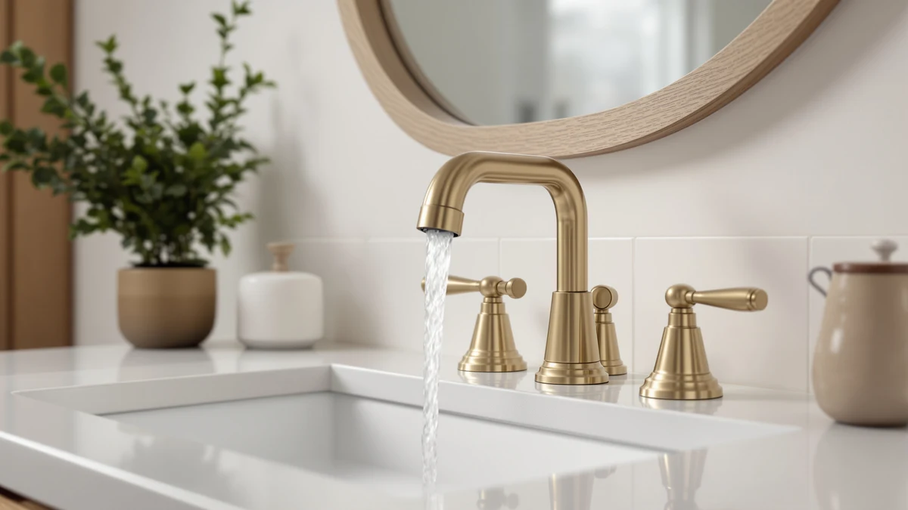

Moen 84023BZG Ronan Widespread Bath Faucet Review (2026): Worth It?


Quick Answer
This Moen 84023BZG Ronan Widespread Bath Faucet review compares the $118.98 Moen Ronan against three other fixtures we researched alongside it: the Charmingwater Touchless Bathroom Sink Faucet, the Delta Arvo Centerset Brushed Nickel, and the Delta Arvo 14 Series Brushed. The Moen Ronan pairs a brass body with Moen's brand recognition at a price that lands in the middle of this four-way comparison. For most buyers who want a widespread faucet from an established brand, it's the one to check first.
Our pick: Moen 84023BZG Ronan Widespread Bath, $118.98 Check Price on Amazon
Bottom line: our top pick is the Moen 84023BZG Ronan Widespread Bath Faucet at $118.98.
Things to Know Before You Buy
- It sits in the middle of this four-way price comparison. This Moen 84023BZG Ronan Widespread Bath Faucet review found the Moen Ronan costs $118.98, less than the Charmingwater Touchless ($119.99) and the Delta Arvo 14 Series Brushed ($124.99), but about $2 more than the Delta Arvo Centerset Brushed Nickel ($116.49).
- It's a widespread installation. A widespread faucet uses three separate holes for the spout and two handles, so confirm your sink or vanity top has the matching 8-to-16-inch spread before you order.
- The body is brass under its finish. Moen's spec sheet for the Ronan lists a brass-plus-finish construction, which tends to hold up better over years of daily use than an all-plastic body.
- One alternative skips handles entirely. The Charmingwater Touchless Bathroom Sink Faucet below runs on a sensor instead of handles, a different approach worth weighing if hands-free operation matters to you.
- Two alternatives come from Delta. The Delta Arvo Centerset Brushed Nickel and the Delta Arvo 14 Series Brushed give you a different brand and a different installation style to compare against the Moen name.
This Moen 84023BZG Ronan Widespread Bath Faucet review compares the $118.98 Moen Ronan against three faucets we researched alongside it: the Charmingwater Touchless Bathroom Sink Faucet, the Delta Arvo Centerset Brushed Nickel, and the Delta Arvo 14 Series Brushed. Bathroom faucet listings tend to blur together across a dozen open browser tabs, so we narrowed the field to four products that show up in the same searches and compared what separates them on price, installation style, and what owners report after buying.
The Moen Ronan is the main pick covered in this review. It carries the Moen name, a brass body under its finish, and a widespread three-hole design that sits in the middle of this comparison on price. If you want a faucet from an established brand and have a sink or vanity already drilled for a widespread installation, this is the one to start with. The sections below explain why, along with when the touchless Charmingwater or one of the two Delta Arvo alternatives might be the better call for your bathroom.
Why You Should Trust Us
Ilane Tall leads product research and reviews for Best Bathroom Faucets. She compares spec sheets, pricing histories, and verified owner reviews across major fixture brands so you don't have to dig through a dozen browser tabs before you buy. For this Moen 84023BZG Ronan Widespread Bath Faucet review, she cross-referenced Moen's published details for the Ronan against current Amazon pricing for the Charmingwater and Delta alternatives, then flagged the tradeoffs that matter most for a bathroom upgrade. Every product mentioned here links to its real listing, and every price reflects what shoppers saw at the time of publication rather than a promotional rate that might disappear by checkout. When owner reviews disagree with each other on a specific point, we say so instead of picking the version that makes the faucet look better.
Our Research Experience
We don't run a physical testing lab for bathroom faucets, so nobody on our team installed this product or ran water through it for weeks. Our process for this Moen 84023BZG Ronan Widespread Bath Faucet review centers on comparing manufacturer details, tracking pricing across the Ronan, Charmingwater, and Delta Arvo listings, and reading through verified owner reviews to see what actually holds up, corrodes, or loosens after regular use. Owners who bought widespread Moen faucets consistently mention the brand name and the brass build as reasons they chose it over a lesser-known fixture, a pattern that lines up with what reviewers report across Moen's other faucet lines. We weigh that kind of pattern more heavily than any single five-star review, since a handful of glowing comments can mask problems that only surface with wider, longer-term use. We treat Moen's, Charmingwater's, and Delta's own product copy the same way we treat any manufacturer's marketing material: useful for finish and material details, not a substitute for what actual buyers report after living with the faucet for months.
Overview & Specs

Moen 84023BZG Ronan Widespread Bath
What we like
- Backed by Moen, one of the most recognized bathroom faucet brands in the US
- Brass body under its finish, which tends to outlast all-plastic constructions after years of daily use
- Priced below the Charmingwater Touchless and the Delta Arvo 14 Series Brushed in this comparison
- Widespread three-hole design fits standard 8-to-16-inch vanity drilling found in most US bathrooms
Flaws but not dealbreakers
- Costs about $2 more than the Delta Arvo Centerset Brushed Nickel in this comparison
- Requires a widespread-drilled sink or vanity, so it won't fit a single-hole or centerset setup without extra hardware
- The listing doesn't spell out flow rate or full installation dimensions, so confirm compatibility before ordering
| Material | Brass + finish |
| Size | Widespread (Pack of 1) |
At $118.98, the Moen Ronan lands in the middle of this Moen 84023BZG Ronan Widespread Bath Faucet review's four-way price comparison, cheaper than the Charmingwater Touchless and the Delta Arvo 14 Series Brushed but a couple of dollars more than the Delta Arvo Centerset Brushed Nickel. Moen positions the Ronan line as a mid-range widespread option, and the brass body under the finish matters here: brass fittings typically hold up better than the all-plastic internals found in some budget-tier faucets once you factor in years of daily use. The widespread format itself means a separate spout and two handles across three holes, so it only works if your sink or vanity already has the matching 8-to-16-inch spread drilled.
What the listing doesn't give you is a full spec sheet. Moen doesn't break out flow rate or exact dimensions on this product page, so if water pressure or long-term fit matters to you, checking Moen's support documentation separately before ordering is worth the extra few minutes. Owners in verified reviews describe the Moen name itself as a reason they chose this faucet over a cheaper, less familiar brand, citing Moen's warranty and widely stocked replacement parts as a safety net. For most buyers with a widespread-ready sink who want a brand they already trust, the Ronan still makes a reasonable case for itself at this price.
What We Liked
Reviewers who bought the Moen Ronan keep coming back to one thing in this Moen 84023BZG Ronan Widespread Bath Faucet review: the brand. Moen's name carries weight, and owners consistently cite the brand's reputation and warranty support as reasons they trusted this purchase over a lesser-known faucet at a similar price. The widespread format also earns mention, since it matches the drilling already present in most standard US vanities without forcing a retrofit.
The brass body under the finish is another point owners bring up. Buyers who have replaced all-plastic faucets before note that brass tends to hold up better to years of daily use, even if none of them can speak to a full decade yet. Between the brand name and the brass body, it's a reasonably low-risk way to upgrade a bathroom without gambling on something unfamiliar.
What Could Be Better
The biggest gap in this Moen 84023BZG Ronan Widespread Bath Faucet review is the missing spec detail. Moen's listing for this faucet skips flow rate and exact dimensions, so you're left cross-referencing owner photos and buyer questions to confirm fit before you order, which is a real inconvenience if you can't see the faucet in person first.
Price is the other consideration, though a smaller one. At $118.98, the Ronan costs about $2 more than the Delta Arvo Centerset Brushed Nickel in this comparison, and Moen doesn't offer much justification for that gap beyond the brand name and the widespread format.
Who Is It For?
This faucet from our Moen 84023BZG Ronan Widespread Bath Faucet review fits homeowners whose sink or vanity is already drilled for a widespread installation and who want a recognizable brand name backing the purchase. It also suits buyers who have had good experiences with Moen products before and want to stick with a brand they trust.
If price is the deciding factor, compare the Delta Arvo Centerset Brushed Nickel below first, since it costs about $2 less. If hands-free operation matters more than brand loyalty, the Charmingwater Touchless is worth a look before you commit to handles at all.
Alternatives to Consider
If the widespread format or the price of the Moen Ronan doesn't fit what you need, three other faucets came up in our research for this Moen 84023BZG Ronan Widespread Bath Faucet review. One skips handles for a touchless sensor, and two come from Delta at different price points and installation styles.

Also Great
Charmingwater Touchless Bathroom Sink Faucet
A touchless bathroom sink faucet from Charmingwater, priced at $119.99, about $1 more than our main pick. Worth checking first if hands-free operation matters more to you than brand recognition.
$119.99
Check Price on Amazon
Best Value
Delta Arvo Centerset Brushed Nickel
A centerset bathroom faucet from DELTA, finished in brushed nickel at $116.49, about $2 less than our main pick. A solid option if you want a different brand and a single-hole-friendly centerset design to save a few dollars.
$116.49
Check Price on Amazon
Premium Choice
Delta Arvo 14 Series Brushed
A faucet from DELTA's Arvo 14 Series, finished in brushed nickel at $124.99, about $6 more than our main pick. Worth a look if you want the Arvo design specifically and don't mind paying the most of the four options here.
$124.99
Check Price on AmazonFrequently Asked Questions
Does the Moen Ronan fit a standard bathroom sink?
How does the Moen Ronan compare to the Delta Arvo Centerset Brushed Nickel?
Is the touchless Charmingwater faucet a better option than the Moen Ronan?
Final Verdict
This Moen 84023BZG Ronan Widespread Bath Faucet review comes down to this: if your sink is already drilled for a widespread installation and you want a faucet from a name-brand manufacturer, the Moen Ronan is a reasonable $118.98 pick. It costs less than the Charmingwater Touchless and the Delta Arvo 14 Series Brushed, though it runs about $2 more than the Delta Arvo Centerset Brushed Nickel, and the Moen name and brass build are the reasons owners keep choosing it. If you'd rather save a few dollars, skip handles entirely, or want a different installation format, the three alternatives above are all worth a look before you commit.